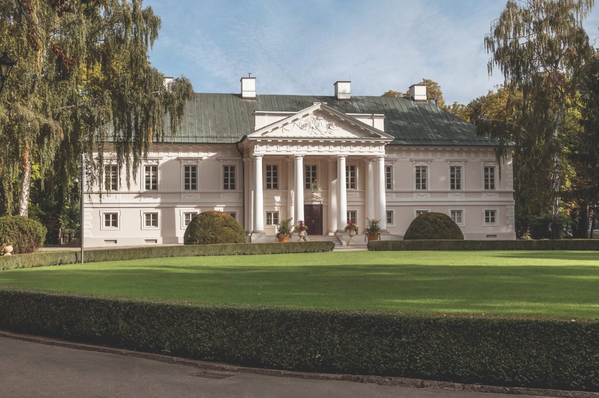

Замки, дворцы и старые усадьбы, где можно остаться на ночь и отдохнуть головой. Нажмите номер на карте — откроется место в списке.
Классицизм XVIII века, французский парк, спа. После войны — летняя резиденция премьера.
Классицизм, архитектор Маркони, английский парк 16 га, пивные ванны. 15 км от Торуня.
Ренессанс XVI века, номера в деревенском стиле, почти 100 лошадей, еда со своих полей.
Дворец Понятовских XVIII века с огромным парком у самой Варшавы, бутик-отель.
Замок на острове посреди Нарвы, по рву катают на гондолах.
Усадьба Одровонжей, спа-отель только для взрослых.
Епископский замок у Буга, рядом знаменитый конный завод арабских лошадей.
Дворец с зубрами, сафари и кукурузным лабиринтом.
Замок крестоносцев XIV века между двумя мазурскими озёрами.
«Малый Вавель», ренессанс XVI века.
Готический замок в маленьком вармийском городке.
Восстановленный замок на Тропе орлиных гнёзд.
В предзамке замка варминских епископов, спа с бассейном.
Тевтонский замок над Вислой, отель во дворце Марысеньки.
Двухсотлетний дворец под Гданьском, новое спа.
Сказочный замок с 99 башенками, в мае цветут азалии.
Ренессансный замок с аркадным двором и парком.
Барочный замок-резиденция, отель прямо в замке.
Замок под Вроцлавом, рядом музей старинных автомобилей.
Ренессансный замок на воде под Вроцлавом.
Замок на Кашубах, полчаса до Балтийского моря.
Дворец в парке недалеко от моря, спа.
Неоготический дворец со своим виноградником.
Дворец XIX века посреди лесов.
Третий по величине замок Польши, отель в замковых флигелях.
Замок на воде в Долине дворцов и садов.
Долина дворцов и садов, вид на Карконоше.
Дворец и фольварк в Долине дворцов, спа в подземельях.
Дворец XVIII века с парком и бассейном.
Замок посреди Нижнесилезской пущи.
Замок над озером, тайные ходы и ночные экскурсии.